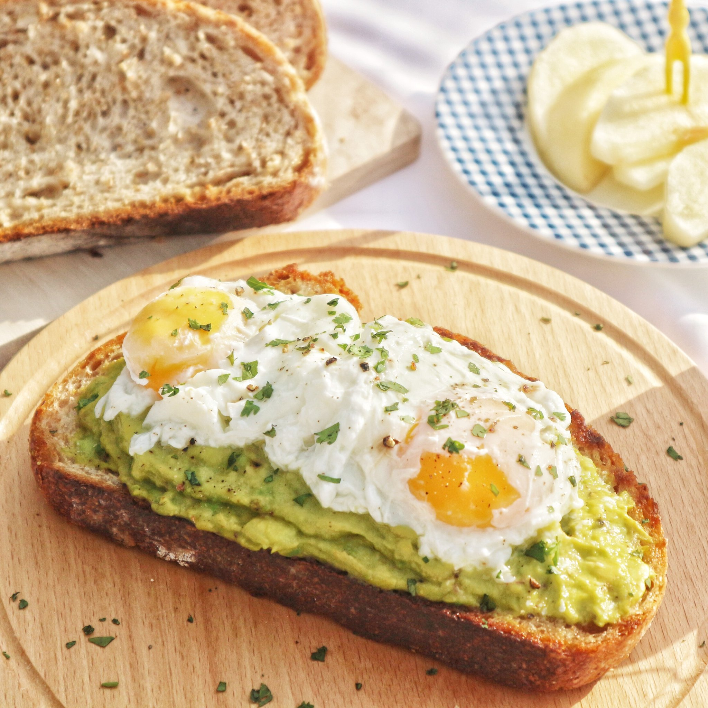

Avocado Toast

Description
Everyone must have heard of avocado toast at least once in their life, and that's a sure thing.
Nothing beats a hearty, thicc avocado toast (sometimes with an egg on top) for breakfast and a cup of hot coffee.
Ingredients
- Sourdough bread - 1 slice
- Avocado - 1 avocado
- Lime juice - 1/2 lime
- Salt and Pepper to taste
- Butter (Salted or Unsalted) - 40 grams
- Parsley - any amount will do
- Egg (Optional)
Cooking Steps
- Heat up your pan
- Add 20 grams of butter into the pan and let it melt
- Add your sourdough slice, turn the heat to medium-low
- Toast to brown each side of the bread and leave aside
- Add the rest of your butter, crack and fried your egg (if any)
- Cut up the avocado, smash until smooth then add salt, lime juice and some black pepper (optional)
- Adjust the seasoning to your preference taste
- Assemble the toast to your preference, garnish with parsley
- Enjoy!